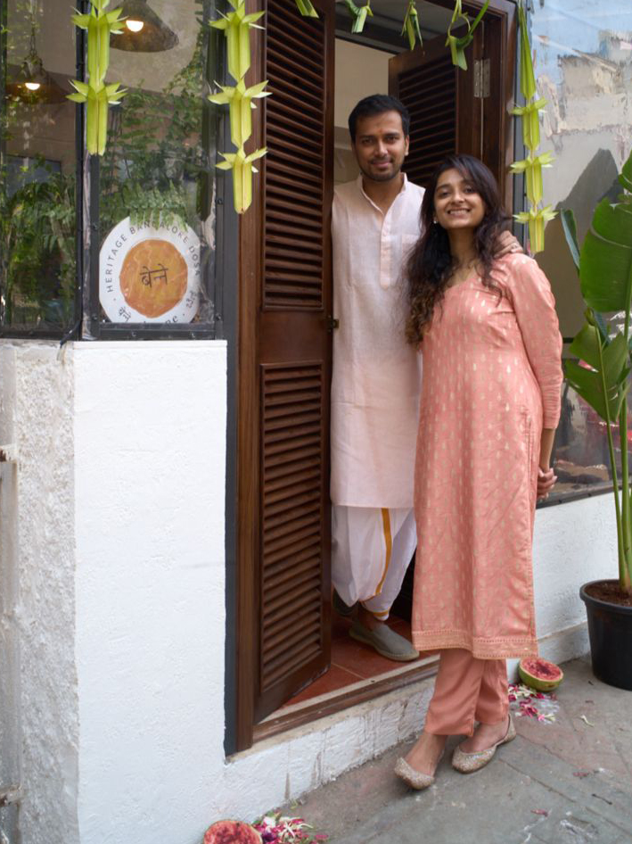

From Bangalore nostalgia to Mumbai's most-loved dosa spot

Akhil Iyer is an actor-producer from Bengaluru. Every time he flew back home, his first stop was a humble darshini on Avenue Road for a benne dosa. After 11 years in Mumbai, he couldn't find anything that came close.
He tried convincing Bangalore restaurateurs to open in Mumbai. Nobody was interested. So he and Shriya Narayan — a psychologist and his partner — decided to do it themselves. Zero F&B experience.
Akhil trained under a dosa master on Avenue Road. Batter consistency, timing, the whole craft. Months of testing in their kitchen followed.
In May 2024, they opened a 275-square-foot space in Bandra. Standing tables, no chairs, self-service — a real darshini. Queues formed from day one.
We didn't just bring the dosa. We brought the entire culture.
Early 2024
Akhil trains on Bengaluru's Avenue Road under a dosa master.
May 2024
Benne opens in Bandra West. 275 sq ft, standing tables, instant queues.
Mid 2024
Deepika Padukone, Ranveer Singh, Anushka Sharma, Virat Kohli visit. Media coverage explodes.
March 2025
Second location opens on Gulmohar Road, Juhu.
Bengaluru native who spent 11 years in Mumbai missing darshini dosas. Trained on Avenue Road to master the craft. Turned homesickness into a restaurant.
Believes food is comfort, connection, and home. Brought the heart, the soul, and the business sense to every decision at Benne.
Also visited by: Dia Mirza, Masaba Gupta, and thousands of dosa lovers across Mumbai.